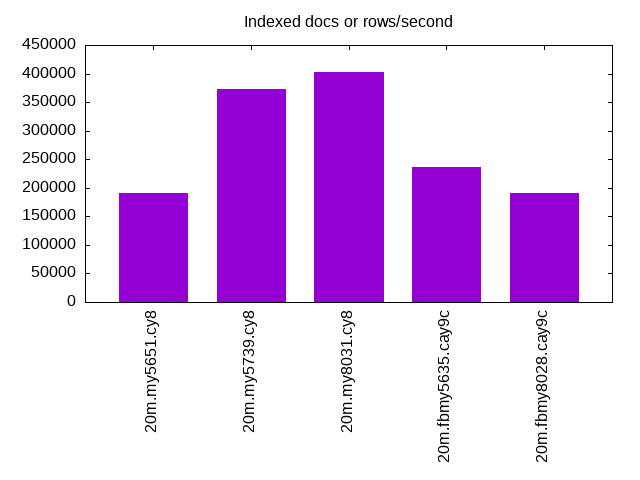
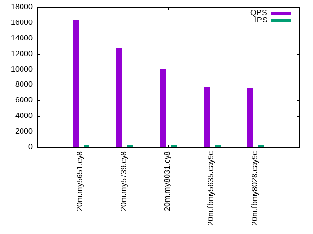
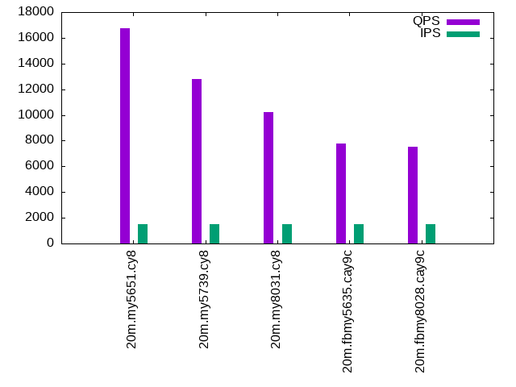

This is a report for the insert benchmark with 20M docs and 3 client(s). It is generated by scripts (bash, awk, sed) and Tufte might not be impressed. An overview of the insert benchmark is here and a short update is here. Below, by DBMS, I mean DBMS+version.config. An example is my8020.c10b40 where my means MySQL, 8020 is version 8.0.20 and c10b40 is the name for the configuration file.
The test server has 8 AMD cores, 16G RAM and an NVMe SSD. It is described here. The benchmark was run with 3 clients and there were 1 or 2 connections per client (1 for queries, 1 for inserts). The benchmark loads 20M rows without secondary indexes, creates secondary indexes, loads another 20M rows then does 3 read+write tests for one hour each that do queries as fast as possible with 100, 500 and then 1000 writes/second/client concurrent with the queries. The database is cached by the storage engine and the only IO is for writes. Clients and the DBMS share one server. The per-database configs are in the per-database subdirectories here.
The tested DBMS are:
The numbers are inserts/s for l.i0 and l.i1, indexed docs (or rows) /s for l.x and queries/s for q*.2. The values are the average rate over the entire test for inserts (IPS) and queries (QPS). The range of values for IPS and QPS is split into 3 parts: bottom 25%, middle 50%, top 25%. Values in the bottom 25% have a red background, values in the top 25% have a green background and values in the middle have no color. A gray background is used for values that can be ignored because the DBMS did not sustain the target insert rate. Red backgrounds are not used when the minimum value is within 80% of the max value.
| dbms | l.i0 | l.x | l.i1 | q100.1 | q500.1 | q1000.1 |
|---|---|---|---|---|---|---|
| 20m.my5651.cy8 | 212766 | 191428 | 74074 | 16452 | 16762 | 16662 |
| 20m.my5739.cy8 | 206186 | 372222 | 73801 | 12784 | 12798 | 13171 |
| 20m.my8031.cy8 | 150376 | 402000 | 58309 | 10017 | 10202 | 10217 |
| 20m.fbmy5635.cay9c | 153846 | 236470 | 74906 | 7769 | 7796 | 7928 |
| 20m.fbmy8028.cay9c | 120482 | 191428 | 63492 | 7630 | 7545 | 7731 |
This lists the average rate of inserts/s for the tests that do inserts concurrent with queries. For such tests the query rate is listed in the table above. The read+write tests are setup so that the insert rate should match the target rate every second. Cells that are not at least 95% of the target have a red background to indicate a failure to satisfy the target.
| dbms | q100.1 | q500.1 | q1000.1 |
|---|---|---|---|
| my5651.cy8 | 300 | 1498 | 2995 |
| my5739.cy8 | 300 | 1498 | 2995 |
| my8031.cy8 | 300 | 1498 | 2995 |
| fbmy5635.cay9c | 300 | 1498 | 2995 |
| fbmy8028.cay9c | 300 | 1498 | 2995 |
| target | 300 | 1500 | 3000 |
l.i0: load without secondary indexes. Graphs for performance per 1-second interval are here.
Average throughput:
Insert response time histogram: each cell has the percentage of responses that take <= the time in the header and max is the max response time in seconds. For the max column values in the top 25% of the range have a red background and in the bottom 25% of the range have a green background. The red background is not used when the min value is within 80% of the max value.
| dbms | 256us | 1ms | 4ms | 16ms | 64ms | 256ms | 1s | 4s | 16s | gt | max |
|---|---|---|---|---|---|---|---|---|---|---|---|
| my5651.cy8 | 12.758 | 86.813 | 0.312 | 0.107 | 0.010 | 0.122 | |||||
| my5739.cy8 | 0.304 | 99.481 | 0.184 | 0.019 | 0.009 | 0.002 | 0.403 | ||||
| my8031.cy8 | 99.731 | 0.245 | 0.012 | 0.011 | 0.112 | ||||||
| fbmy5635.cay9c | 99.979 | 0.011 | 0.010 | 0.107 | |||||||
| fbmy8028.cay9c | 99.802 | 0.185 | 0.003 | 0.010 | 0.113 |
Performance metrics for the DBMS listed above. Some are normalized by throughput, others are not. Legend for results is here.
ips qps rps rmbps wps wmbps rpq rkbpq wpi wkbpi csps cpups cspq cpupq dbgb1 dbgb2 rss maxop p50 p99 tag 212766 0 1804 7.1 208.1 49.4 0.008 0.034 0.001 0.238 24274 54.0 0.114 20 1.3 41.8 2.1 0.122 80214 44351 20m.my5651.cy8 206186 0 0 0.0 319.3 50.5 0.000 0.000 0.002 0.251 21142 55.2 0.103 21 1.3 41.9 2.3 0.403 78115 35461 20m.my5739.cy8 150376 0 0 0.0 753.8 51.6 0.000 0.000 0.005 0.352 16749 54.1 0.111 29 1.3 3.8 2.5 0.112 55240 20984 20m.my8031.cy8 153846 0 0 0.0 200.5 45.9 0.000 0.000 0.001 0.306 16014 57.0 0.104 30 0.7 1.7 0.4 0.107 55041 44471 20m.fbmy5635.cay9c 120482 0 0 0.0 153.1 33.4 0.000 0.000 0.001 0.284 12902 54.8 0.107 36 0.7 1.9 0.7 0.113 42653 37159 20m.fbmy8028.cay9c
l.x: create secondary indexes.
Average throughput:
Performance metrics for the DBMS listed above. Some are normalized by throughput, others are not. Legend for results is here.
ips qps rps rmbps wps wmbps rpq rkbpq wpi wkbpi csps cpups cspq cpupq dbgb1 dbgb2 rss maxop p50 p99 tag 191428 0 553 2.2 6526.0 257.6 0.003 0.012 0.034 1.378 20695 30.2 0.108 13 2.7 43.2 3.5 0.006 NA NA 20m.my5651.cy8 372222 0 0 0.0 4554.6 294.8 0.000 0.000 0.012 0.811 22231 32.4 0.060 7 3.0 43.5 3.8 0.008 NA NA 20m.my5739.cy8 402000 0 2101 138.5 8025.9 385.3 0.005 0.353 0.020 0.981 25785 77.5 0.064 15 3.0 5.4 3.7 0.016 NA NA 20m.my8031.cy8 236470 0 0 0.0 168.6 38.2 0.000 0.000 0.001 0.166 651 35.9 0.003 12 1.4 2.4 1.5 0.003 NA NA 20m.fbmy5635.cay9c 191428 0 0 0.0 136.9 31.0 0.000 0.000 0.001 0.166 710 35.0 0.004 15 1.4 2.7 2.1 0.005 NA NA 20m.fbmy8028.cay9c
l.i1: continue load after secondary indexes created. Graphs for performance per 1-second interval are here.
Average throughput:
Insert response time histogram: each cell has the percentage of responses that take <= the time in the header and max is the max response time in seconds. For the max column values in the top 25% of the range have a red background and in the bottom 25% of the range have a green background. The red background is not used when the min value is within 80% of the max value.
| dbms | 256us | 1ms | 4ms | 16ms | 64ms | 256ms | 1s | 4s | 16s | gt | max |
|---|---|---|---|---|---|---|---|---|---|---|---|
| my5651.cy8 | 98.979 | 0.811 | 0.205 | 0.004 | nonzero | 0.286 | |||||
| my5739.cy8 | 99.372 | 0.484 | 0.134 | 0.010 | 0.204 | ||||||
| my8031.cy8 | 98.920 | 0.786 | 0.271 | 0.021 | 0.001 | 0.415 | |||||
| fbmy5635.cay9c | 99.960 | 0.034 | 0.006 | 0.001 | 0.116 | ||||||
| fbmy8028.cay9c | 99.813 | 0.164 | 0.017 | 0.006 | 0.174 |
Performance metrics for the DBMS listed above. Some are normalized by throughput, others are not. Legend for results is here.
ips qps rps rmbps wps wmbps rpq rkbpq wpi wkbpi csps cpups cspq cpupq dbgb1 dbgb2 rss maxop p50 p99 tag 74074 0 1244 4.9 228.2 45.4 0.017 0.067 0.003 0.628 18475 46.8 0.249 51 7.8 48.3 7.8 0.286 25871 4595 20m.my5651.cy8 73801 0 0 0.0 717.3 58.5 0.000 0.000 0.010 0.812 16326 48.6 0.221 53 7.8 48.3 8.1 0.204 25972 3146 20m.my5739.cy8 58309 0 270 4.2 3582.1 124.3 0.005 0.074 0.061 2.183 22553 47.0 0.387 64 7.8 10.2 8.2 0.415 20431 1099 20m.my8031.cy8 74906 0 23 2.8 282.4 64.8 0.000 0.038 0.004 0.885 16526 65.9 0.221 70 3.9 5.7 1.8 0.116 25320 21477 20m.fbmy5635.cay9c 63492 0 19 2.4 244.2 55.5 0.000 0.038 0.004 0.896 14000 62.7 0.220 79 3.3 5.2 2.6 0.174 21426 17031 20m.fbmy8028.cay9c
q100.1: range queries with 100 insert/s per client. Graphs for performance per 1-second interval are here.
Average throughput:
Query response time histogram: each cell has the percentage of responses that take <= the time in the header and max is the max response time in seconds. For max values in the top 25% of the range have a red background and in the bottom 25% of the range have a green background. The red background is not used when the min value is within 80% of the max value.
| dbms | 256us | 1ms | 4ms | 16ms | 64ms | 256ms | 1s | 4s | 16s | gt | max |
|---|---|---|---|---|---|---|---|---|---|---|---|
| my5651.cy8 | 95.701 | 4.295 | 0.003 | 0.001 | nonzero | 0.039 | |||||
| my5739.cy8 | 76.932 | 23.066 | 0.002 | nonzero | nonzero | 0.045 | |||||
| my8031.cy8 | 39.820 | 60.177 | 0.002 | nonzero | nonzero | 0.025 | |||||
| fbmy5635.cay9c | 5.906 | 94.091 | 0.003 | nonzero | nonzero | 0.032 | |||||
| fbmy8028.cay9c | 5.494 | 94.503 | 0.003 | nonzero | 0.006 |
Insert response time histogram: each cell has the percentage of responses that take <= the time in the header and max is the max response time in seconds. For max values in the top 25% of the range have a red background and in the bottom 25% of the range have a green background. The red background is not used when the min value is within 80% of the max value.
| dbms | 256us | 1ms | 4ms | 16ms | 64ms | 256ms | 1s | 4s | 16s | gt | max |
|---|---|---|---|---|---|---|---|---|---|---|---|
| my5651.cy8 | 89.597 | 9.685 | 0.718 | 0.056 | |||||||
| my5739.cy8 | 99.181 | 0.778 | 0.042 | 0.051 | |||||||
| my8031.cy8 | 98.852 | 0.991 | 0.157 | 0.030 | |||||||
| fbmy5635.cay9c | 100.000 | 0.004 | |||||||||
| fbmy8028.cay9c | 99.894 | 0.079 | 0.028 | 0.039 |
Performance metrics for the DBMS listed above. Some are normalized by throughput, others are not. Legend for results is here.
ips qps rps rmbps wps wmbps rpq rkbpq wpi wkbpi csps cpups cspq cpupq dbgb1 dbgb2 rss maxop p50 p99 tag 300 16452 5 0.0 80.5 2.6 0.000 0.001 0.269 8.727 63261 37.9 3.845 184 8.5 49.0 8.4 0.039 5450 5162 20m.my5651.cy8 300 12784 0 0.0 45.3 1.5 0.000 0.000 0.151 5.285 49159 38.5 3.845 241 8.5 49.0 8.7 0.045 4219 3836 20m.my5739.cy8 300 10017 0 0.0 243.2 6.3 0.000 0.000 0.812 21.470 39343 38.3 3.928 306 8.5 10.9 8.9 0.025 3292 2829 20m.my8031.cy8 300 7769 0 0.0 8.8 0.9 0.000 0.000 0.029 3.126 29898 38.2 3.849 393 2.9 4.7 5.7 0.032 2573 2318 20m.fbmy5635.cay9c 300 7630 0 0.0 7.5 1.1 0.000 0.000 0.025 3.695 29479 39.0 3.864 409 2.9 4.9 6.4 0.006 2525 2078 20m.fbmy8028.cay9c
q500.1: range queries with 500 insert/s per client. Graphs for performance per 1-second interval are here.
Average throughput:
Query response time histogram: each cell has the percentage of responses that take <= the time in the header and max is the max response time in seconds. For max values in the top 25% of the range have a red background and in the bottom 25% of the range have a green background. The red background is not used when the min value is within 80% of the max value.
| dbms | 256us | 1ms | 4ms | 16ms | 64ms | 256ms | 1s | 4s | 16s | gt | max |
|---|---|---|---|---|---|---|---|---|---|---|---|
| my5651.cy8 | 95.908 | 4.085 | 0.007 | nonzero | 0.010 | ||||||
| my5739.cy8 | 76.946 | 23.048 | 0.006 | nonzero | nonzero | 0.022 | |||||
| my8031.cy8 | 43.046 | 56.945 | 0.008 | 0.001 | nonzero | 0.029 | |||||
| fbmy5635.cay9c | 7.962 | 92.024 | 0.014 | 0.001 | 0.008 | ||||||
| fbmy8028.cay9c | 3.688 | 96.294 | 0.017 | 0.001 | 0.012 |
Insert response time histogram: each cell has the percentage of responses that take <= the time in the header and max is the max response time in seconds. For max values in the top 25% of the range have a red background and in the bottom 25% of the range have a green background. The red background is not used when the min value is within 80% of the max value.
| dbms | 256us | 1ms | 4ms | 16ms | 64ms | 256ms | 1s | 4s | 16s | gt | max |
|---|---|---|---|---|---|---|---|---|---|---|---|
| my5651.cy8 | 95.266 | 4.734 | 0.015 | ||||||||
| my5739.cy8 | 99.523 | 0.475 | 0.002 | 0.024 | |||||||
| my8031.cy8 | 98.941 | 1.011 | 0.046 | 0.002 | 0.103 | ||||||
| fbmy5635.cay9c | 99.739 | 0.261 | 0.014 | ||||||||
| fbmy8028.cay9c | 99.313 | 0.686 | 0.001 | 0.016 |
Performance metrics for the DBMS listed above. Some are normalized by throughput, others are not. Legend for results is here.
ips qps rps rmbps wps wmbps rpq rkbpq wpi wkbpi csps cpups cspq cpupq dbgb1 dbgb2 rss maxop p50 p99 tag 1498 16762 24 0.1 5.2 0.9 0.001 0.006 0.004 0.592 64254 38.6 3.833 184 9.7 50.2 9.5 0.010 5562 5148 20m.my5651.cy8 1498 12798 0 0.0 12.9 1.1 0.000 0.000 0.009 0.718 49224 39.3 3.846 246 9.7 50.2 9.8 0.022 4267 3710 20m.my5739.cy8 1498 10202 0 0.0 554.4 14.6 0.000 0.000 0.370 10.004 40949 39.4 4.014 309 9.7 12.2 10.0 0.029 3342 2813 20m.my8031.cy8 1498 7796 0 0.0 12.9 2.0 0.000 0.000 0.009 1.380 30109 39.3 3.862 403 3.3 3.9 10.0 0.008 2557 2237 20m.fbmy5635.cay9c 1498 7545 0 0.0 10.8 2.0 0.000 0.000 0.007 1.341 29239 40.0 3.875 424 3.3 4.1 10.6 0.012 2493 2014 20m.fbmy8028.cay9c
q1000.1: range queries with 1000 insert/s per client. Graphs for performance per 1-second interval are here.
Average throughput:
Query response time histogram: each cell has the percentage of responses that take <= the time in the header and max is the max response time in seconds. For max values in the top 25% of the range have a red background and in the bottom 25% of the range have a green background. The red background is not used when the min value is within 80% of the max value.
| dbms | 256us | 1ms | 4ms | 16ms | 64ms | 256ms | 1s | 4s | 16s | gt | max |
|---|---|---|---|---|---|---|---|---|---|---|---|
| my5651.cy8 | 95.395 | 4.593 | 0.011 | nonzero | nonzero | 0.041 | |||||
| my5739.cy8 | 79.732 | 20.245 | 0.023 | 0.001 | nonzero | 0.046 | |||||
| my8031.cy8 | 43.353 | 56.618 | 0.028 | 0.001 | nonzero | 0.024 | |||||
| fbmy5635.cay9c | 9.256 | 90.716 | 0.028 | 0.001 | nonzero | 0.022 | |||||
| fbmy8028.cay9c | 4.133 | 95.824 | 0.042 | 0.001 | nonzero | 0.016 |
Insert response time histogram: each cell has the percentage of responses that take <= the time in the header and max is the max response time in seconds. For max values in the top 25% of the range have a red background and in the bottom 25% of the range have a green background. The red background is not used when the min value is within 80% of the max value.
| dbms | 256us | 1ms | 4ms | 16ms | 64ms | 256ms | 1s | 4s | 16s | gt | max |
|---|---|---|---|---|---|---|---|---|---|---|---|
| my5651.cy8 | 94.723 | 5.233 | 0.044 | 0.050 | |||||||
| my5739.cy8 | 99.174 | 0.821 | 0.005 | nonzero | 0.076 | ||||||
| my8031.cy8 | 97.700 | 2.253 | 0.028 | 0.018 | 0.110 | ||||||
| fbmy5635.cay9c | 97.469 | 2.527 | 0.004 | 0.026 | |||||||
| fbmy8028.cay9c | 94.917 | 5.077 | 0.006 | 0.038 |
Performance metrics for the DBMS listed above. Some are normalized by throughput, others are not. Legend for results is here.
ips qps rps rmbps wps wmbps rpq rkbpq wpi wkbpi csps cpups cspq cpupq dbgb1 dbgb2 rss maxop p50 p99 tag 2995 16662 48 0.2 65.5 2.8 0.003 0.011 0.022 0.954 63957 39.4 3.839 189 10.5 51.0 10.3 0.041 5514 5133 20m.my5651.cy8 2995 13171 0 0.0 91.7 3.4 0.000 0.000 0.031 1.168 50661 40.3 3.847 245 10.5 51.0 10.6 0.046 4379 3820 20m.my5739.cy8 2995 10217 0 0.0 784.3 20.6 0.000 0.000 0.262 7.059 41372 40.5 4.049 317 10.5 13.0 10.8 0.024 3358 2893 20m.my8031.cy8 2995 7928 3 0.3 23.6 4.4 0.000 0.044 0.008 1.513 30552 41.0 3.854 414 4.1 6.0 10.5 0.022 2637 2333 20m.fbmy5635.cay9c 2995 7731 4 0.5 22.6 4.6 0.001 0.067 0.008 1.572 29833 42.2 3.859 437 4.0 6.2 10.9 0.016 2573 2126 20m.fbmy8028.cay9c
l.i0: load without secondary indexes
Performance metrics for all DBMS, not just the ones listed above. Some are normalized by throughput, others are not. Legend for results is here.
ips qps rps rmbps wps wmbps rpq rkbpq wpi wkbpi csps cpups cspq cpupq dbgb1 dbgb2 rss maxop p50 p99 tag 212766 0 1804 7.1 208.1 49.4 0.008 0.034 0.001 0.238 24274 54.0 0.114 20 1.3 41.8 2.1 0.122 80214 44351 20m.my5651.cy8 206186 0 0 0.0 319.3 50.5 0.000 0.000 0.002 0.251 21142 55.2 0.103 21 1.3 41.9 2.3 0.403 78115 35461 20m.my5739.cy8 150376 0 0 0.0 753.8 51.6 0.000 0.000 0.005 0.352 16749 54.1 0.111 29 1.3 3.8 2.5 0.112 55240 20984 20m.my8031.cy8 153846 0 0 0.0 200.5 45.9 0.000 0.000 0.001 0.306 16014 57.0 0.104 30 0.7 1.7 0.4 0.107 55041 44471 20m.fbmy5635.cay9c 120482 0 0 0.0 153.1 33.4 0.000 0.000 0.001 0.284 12902 54.8 0.107 36 0.7 1.9 0.7 0.113 42653 37159 20m.fbmy8028.cay9c
l.x: create secondary indexes
Performance metrics for all DBMS, not just the ones listed above. Some are normalized by throughput, others are not. Legend for results is here.
ips qps rps rmbps wps wmbps rpq rkbpq wpi wkbpi csps cpups cspq cpupq dbgb1 dbgb2 rss maxop p50 p99 tag 191428 0 553 2.2 6526.0 257.6 0.003 0.012 0.034 1.378 20695 30.2 0.108 13 2.7 43.2 3.5 0.006 NA NA 20m.my5651.cy8 372222 0 0 0.0 4554.6 294.8 0.000 0.000 0.012 0.811 22231 32.4 0.060 7 3.0 43.5 3.8 0.008 NA NA 20m.my5739.cy8 402000 0 2101 138.5 8025.9 385.3 0.005 0.353 0.020 0.981 25785 77.5 0.064 15 3.0 5.4 3.7 0.016 NA NA 20m.my8031.cy8 236470 0 0 0.0 168.6 38.2 0.000 0.000 0.001 0.166 651 35.9 0.003 12 1.4 2.4 1.5 0.003 NA NA 20m.fbmy5635.cay9c 191428 0 0 0.0 136.9 31.0 0.000 0.000 0.001 0.166 710 35.0 0.004 15 1.4 2.7 2.1 0.005 NA NA 20m.fbmy8028.cay9c
l.i1: continue load after secondary indexes created
Performance metrics for all DBMS, not just the ones listed above. Some are normalized by throughput, others are not. Legend for results is here.
ips qps rps rmbps wps wmbps rpq rkbpq wpi wkbpi csps cpups cspq cpupq dbgb1 dbgb2 rss maxop p50 p99 tag 74074 0 1244 4.9 228.2 45.4 0.017 0.067 0.003 0.628 18475 46.8 0.249 51 7.8 48.3 7.8 0.286 25871 4595 20m.my5651.cy8 73801 0 0 0.0 717.3 58.5 0.000 0.000 0.010 0.812 16326 48.6 0.221 53 7.8 48.3 8.1 0.204 25972 3146 20m.my5739.cy8 58309 0 270 4.2 3582.1 124.3 0.005 0.074 0.061 2.183 22553 47.0 0.387 64 7.8 10.2 8.2 0.415 20431 1099 20m.my8031.cy8 74906 0 23 2.8 282.4 64.8 0.000 0.038 0.004 0.885 16526 65.9 0.221 70 3.9 5.7 1.8 0.116 25320 21477 20m.fbmy5635.cay9c 63492 0 19 2.4 244.2 55.5 0.000 0.038 0.004 0.896 14000 62.7 0.220 79 3.3 5.2 2.6 0.174 21426 17031 20m.fbmy8028.cay9c
q100.1: range queries with 100 insert/s per client
Performance metrics for all DBMS, not just the ones listed above. Some are normalized by throughput, others are not. Legend for results is here.
ips qps rps rmbps wps wmbps rpq rkbpq wpi wkbpi csps cpups cspq cpupq dbgb1 dbgb2 rss maxop p50 p99 tag 300 16452 5 0.0 80.5 2.6 0.000 0.001 0.269 8.727 63261 37.9 3.845 184 8.5 49.0 8.4 0.039 5450 5162 20m.my5651.cy8 300 12784 0 0.0 45.3 1.5 0.000 0.000 0.151 5.285 49159 38.5 3.845 241 8.5 49.0 8.7 0.045 4219 3836 20m.my5739.cy8 300 10017 0 0.0 243.2 6.3 0.000 0.000 0.812 21.470 39343 38.3 3.928 306 8.5 10.9 8.9 0.025 3292 2829 20m.my8031.cy8 300 7769 0 0.0 8.8 0.9 0.000 0.000 0.029 3.126 29898 38.2 3.849 393 2.9 4.7 5.7 0.032 2573 2318 20m.fbmy5635.cay9c 300 7630 0 0.0 7.5 1.1 0.000 0.000 0.025 3.695 29479 39.0 3.864 409 2.9 4.9 6.4 0.006 2525 2078 20m.fbmy8028.cay9c
q500.1: range queries with 500 insert/s per client
Performance metrics for all DBMS, not just the ones listed above. Some are normalized by throughput, others are not. Legend for results is here.
ips qps rps rmbps wps wmbps rpq rkbpq wpi wkbpi csps cpups cspq cpupq dbgb1 dbgb2 rss maxop p50 p99 tag 1498 16762 24 0.1 5.2 0.9 0.001 0.006 0.004 0.592 64254 38.6 3.833 184 9.7 50.2 9.5 0.010 5562 5148 20m.my5651.cy8 1498 12798 0 0.0 12.9 1.1 0.000 0.000 0.009 0.718 49224 39.3 3.846 246 9.7 50.2 9.8 0.022 4267 3710 20m.my5739.cy8 1498 10202 0 0.0 554.4 14.6 0.000 0.000 0.370 10.004 40949 39.4 4.014 309 9.7 12.2 10.0 0.029 3342 2813 20m.my8031.cy8 1498 7796 0 0.0 12.9 2.0 0.000 0.000 0.009 1.380 30109 39.3 3.862 403 3.3 3.9 10.0 0.008 2557 2237 20m.fbmy5635.cay9c 1498 7545 0 0.0 10.8 2.0 0.000 0.000 0.007 1.341 29239 40.0 3.875 424 3.3 4.1 10.6 0.012 2493 2014 20m.fbmy8028.cay9c
q1000.1: range queries with 1000 insert/s per client
Performance metrics for all DBMS, not just the ones listed above. Some are normalized by throughput, others are not. Legend for results is here.
ips qps rps rmbps wps wmbps rpq rkbpq wpi wkbpi csps cpups cspq cpupq dbgb1 dbgb2 rss maxop p50 p99 tag 2995 16662 48 0.2 65.5 2.8 0.003 0.011 0.022 0.954 63957 39.4 3.839 189 10.5 51.0 10.3 0.041 5514 5133 20m.my5651.cy8 2995 13171 0 0.0 91.7 3.4 0.000 0.000 0.031 1.168 50661 40.3 3.847 245 10.5 51.0 10.6 0.046 4379 3820 20m.my5739.cy8 2995 10217 0 0.0 784.3 20.6 0.000 0.000 0.262 7.059 41372 40.5 4.049 317 10.5 13.0 10.8 0.024 3358 2893 20m.my8031.cy8 2995 7928 3 0.3 23.6 4.4 0.000 0.044 0.008 1.513 30552 41.0 3.854 414 4.1 6.0 10.5 0.022 2637 2333 20m.fbmy5635.cay9c 2995 7731 4 0.5 22.6 4.6 0.001 0.067 0.008 1.572 29833 42.2 3.859 437 4.0 6.2 10.9 0.016 2573 2126 20m.fbmy8028.cay9c
Insert response time histogram
256us 1ms 4ms 16ms 64ms 256ms 1s 4s 16s gt max tag 0.000 12.758 86.813 0.312 0.107 0.010 0.000 0.000 0.000 0.000 0.122 my5651.cy8 0.000 0.304 99.481 0.184 0.019 0.009 0.002 0.000 0.000 0.000 0.403 my5739.cy8 0.000 0.000 99.731 0.245 0.012 0.011 0.000 0.000 0.000 0.000 0.112 my8031.cy8 0.000 0.000 99.979 0.011 0.000 0.010 0.000 0.000 0.000 0.000 0.107 fbmy5635.cay9c 0.000 0.000 99.802 0.185 0.003 0.010 0.000 0.000 0.000 0.000 0.113 fbmy8028.cay9c
TODO - determine whether there is data for create index response time
Insert response time histogram
256us 1ms 4ms 16ms 64ms 256ms 1s 4s 16s gt max tag 0.000 0.000 98.979 0.811 0.205 0.004 nonzero 0.000 0.000 0.000 0.286 my5651.cy8 0.000 0.000 99.372 0.484 0.134 0.010 0.000 0.000 0.000 0.000 0.204 my5739.cy8 0.000 0.000 98.920 0.786 0.271 0.021 0.001 0.000 0.000 0.000 0.415 my8031.cy8 0.000 0.000 99.960 0.034 0.006 0.001 0.000 0.000 0.000 0.000 0.116 fbmy5635.cay9c 0.000 0.000 99.813 0.164 0.017 0.006 0.000 0.000 0.000 0.000 0.174 fbmy8028.cay9c
Query response time histogram
256us 1ms 4ms 16ms 64ms 256ms 1s 4s 16s gt max tag 95.701 4.295 0.003 0.001 nonzero 0.000 0.000 0.000 0.000 0.000 0.039 my5651.cy8 76.932 23.066 0.002 nonzero nonzero 0.000 0.000 0.000 0.000 0.000 0.045 my5739.cy8 39.820 60.177 0.002 nonzero nonzero 0.000 0.000 0.000 0.000 0.000 0.025 my8031.cy8 5.906 94.091 0.003 nonzero nonzero 0.000 0.000 0.000 0.000 0.000 0.032 fbmy5635.cay9c 5.494 94.503 0.003 nonzero 0.000 0.000 0.000 0.000 0.000 0.000 0.006 fbmy8028.cay9c
Insert response time histogram
256us 1ms 4ms 16ms 64ms 256ms 1s 4s 16s gt max tag 0.000 0.000 89.597 9.685 0.718 0.000 0.000 0.000 0.000 0.000 0.056 my5651.cy8 0.000 0.000 99.181 0.778 0.042 0.000 0.000 0.000 0.000 0.000 0.051 my5739.cy8 0.000 0.000 98.852 0.991 0.157 0.000 0.000 0.000 0.000 0.000 0.030 my8031.cy8 0.000 0.000 100.000 0.000 0.000 0.000 0.000 0.000 0.000 0.000 0.004 fbmy5635.cay9c 0.000 0.000 99.894 0.079 0.028 0.000 0.000 0.000 0.000 0.000 0.039 fbmy8028.cay9c
Query response time histogram
256us 1ms 4ms 16ms 64ms 256ms 1s 4s 16s gt max tag 95.908 4.085 0.007 nonzero 0.000 0.000 0.000 0.000 0.000 0.000 0.010 my5651.cy8 76.946 23.048 0.006 nonzero nonzero 0.000 0.000 0.000 0.000 0.000 0.022 my5739.cy8 43.046 56.945 0.008 0.001 nonzero 0.000 0.000 0.000 0.000 0.000 0.029 my8031.cy8 7.962 92.024 0.014 0.001 0.000 0.000 0.000 0.000 0.000 0.000 0.008 fbmy5635.cay9c 3.688 96.294 0.017 0.001 0.000 0.000 0.000 0.000 0.000 0.000 0.012 fbmy8028.cay9c
Insert response time histogram
256us 1ms 4ms 16ms 64ms 256ms 1s 4s 16s gt max tag 0.000 0.000 95.266 4.734 0.000 0.000 0.000 0.000 0.000 0.000 0.015 my5651.cy8 0.000 0.000 99.523 0.475 0.002 0.000 0.000 0.000 0.000 0.000 0.024 my5739.cy8 0.000 0.000 98.941 1.011 0.046 0.002 0.000 0.000 0.000 0.000 0.103 my8031.cy8 0.000 0.000 99.739 0.261 0.000 0.000 0.000 0.000 0.000 0.000 0.014 fbmy5635.cay9c 0.000 0.000 99.313 0.686 0.001 0.000 0.000 0.000 0.000 0.000 0.016 fbmy8028.cay9c
Query response time histogram
256us 1ms 4ms 16ms 64ms 256ms 1s 4s 16s gt max tag 95.395 4.593 0.011 nonzero nonzero 0.000 0.000 0.000 0.000 0.000 0.041 my5651.cy8 79.732 20.245 0.023 0.001 nonzero 0.000 0.000 0.000 0.000 0.000 0.046 my5739.cy8 43.353 56.618 0.028 0.001 nonzero 0.000 0.000 0.000 0.000 0.000 0.024 my8031.cy8 9.256 90.716 0.028 0.001 nonzero 0.000 0.000 0.000 0.000 0.000 0.022 fbmy5635.cay9c 4.133 95.824 0.042 0.001 nonzero 0.000 0.000 0.000 0.000 0.000 0.016 fbmy8028.cay9c
Insert response time histogram
256us 1ms 4ms 16ms 64ms 256ms 1s 4s 16s gt max tag 0.000 0.000 94.723 5.233 0.044 0.000 0.000 0.000 0.000 0.000 0.050 my5651.cy8 0.000 0.000 99.174 0.821 0.005 nonzero 0.000 0.000 0.000 0.000 0.076 my5739.cy8 0.000 0.000 97.700 2.253 0.028 0.018 0.000 0.000 0.000 0.000 0.110 my8031.cy8 0.000 0.000 97.469 2.527 0.004 0.000 0.000 0.000 0.000 0.000 0.026 fbmy5635.cay9c 0.000 0.000 94.917 5.077 0.006 0.000 0.000 0.000 0.000 0.000 0.038 fbmy8028.cay9c